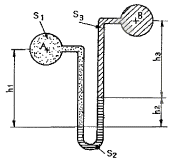
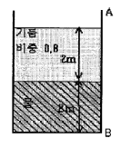
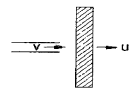
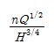
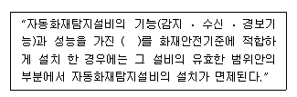

소방설비기사(기계분야) (2010-03-07 기출문제)
1과목: 소방원론
1. 다음의 물질 중 공기에서의 위험도(H) 값이 가장 큰 것은?
- 에테르
- 수소
- 에틸렌
- 프로판
(정답률: 55%)

2. 촛불의 연소형태에 해당하는 것은?
- 표면연소
- 분해연소
- 증발연소
- 자기연소
(정답률: 61%)
3. 자연발화의 예방을 위한 대책으로 옳지 않은 것은?
- 열의 축적을 방지한다.
- 주위 온도를 낮게 유지한다.
- 열전도성을 나쁘게 한다.
- 산소와의 접촉을 차단한다.
(정답률: 72%)
4. 열전도율을 표시하는 단위에 해당하는 것은?
- [kcal/m2ㆍhㆍ℃]
- [kcalㆍm2/hㆍ℃]
- [W/mㆍK]
- [J/m3ㆍK]
(정답률: 54%)
5. 다음 원소 중 할로겐 족 원소인 것은?
- Ne
- Ar
- Cl
- Xe
(정답률: 61%)
6. 다음 물질 중 인화점이 가장 낮은 것은?
- 에틸알콜
- 등유
- 경유
- 디에틸에테르
(정답률: 61%)
7. 분말 소화약제의 소화효과로 가장 거리가 먼 것은?
- 방사열의 차단효과
- 부촉매효과
- 제거효과
- 질식효과
(정답률: 45%)
8. 건축물 내부에 설치하는 피난계단의 구조로서 옳지 않는 것은?
- 계단실은 창문ㆍ출입구 기타 개구부를 제외한 당해 건축물의 다른 부분과 내화구조의 벽으로 구획할 것
- 계단실의 실내에 접하는 부분의 마감은 불연재료로 할 것
- 계단실에는 예비전원에 의한 조명설비를 할 것
- 계단은 피난층 또는 지상까지 직접 연결되지 않도록 할 것
(정답률: 75%)
9. 공기 또는 물과 반응하여 발화할 위험이 높은 물질은?
- 벤젠
- 이황화탄소
- 트리에틸알루미늄
- 톨루엔
(정답률: 63%)
10. 다음 중 착화온도가 가장 낮은 것은?
- 에틸알코올
- 톨루엔
- 등유
- 가솔린
(정답률: 51%)
11. Halon 1301의 분자식에 해당하는 것은?
- CCl3H
- CH3Cl
- CF3Br
- C2F2Br
(정답률: 75%)
12. 다음 중 제3류 위험물로서 자연발화성만 있고 금수성이 없기 때문에 물속에 보관하는 물질은?
- 염소산암모늄
- 황린
- 칼륨
- 질산
(정답률: 75%)
13. 목재 화재시 다량의 물을 뿌려 소화하고자 한다. 이때 가장 큰 소화효과는?
- 제거소화효과
- 냉각소화효과
- 부촉매소화효과
- 희석소화효과
(정답률: 74%)
14. 정전기로 인한 피해발생의 방지대책이 아닌 것은?
- 접지실시
- 공기의 이온화
- 부도체 사용
- 70% 이상의 상대습도 유지
(정답률: 58%)
15. 목재의 상태를 기준으로 했을 때 다음 중 연소속도가 가장 느린 것은?
- 거칠고 얇은 것
- 각이 있고 얇은 것
- 매끄럽고 둥근 것
- 수분이 적고 거친 것
(정답률: 70%)
16. 제1종 분말소화약제의 주성분으로 옳은 것은?
- KHCO3
- NaHCO3
- NH4H2PO4
- Al2(SO4)3
(정답률: 72%)
17. 건물내 피난동선의 조건으로 옳지 않은 것은?
- 2개 이상의 방향으로 피난할 수 있어야 한다.
- 가급적 단순한 형태로 한다.
- 통로의 말단은 안전한 장소이어야 한다.
- 수직동선은 금하고 수평동선만 고려한다.
(정답률: 74%)
18. 플래쉬오버(flash over)에 대한 설명으로 옳은 것은?
- 건물화재에서 가연물이 착화하여 연소하기 시작하는 단계이다.
- 축적된 가연성 가스가 일시에 인화하여 화염이 확대되는 단계이다.
- 건물 화재에서 화재가 쇠퇴기에 이른 단계이다.
- 건물 화재에서 가연물의 연소가 끝난 단계이다.
(정답률: 74%)
19. 건축물의 주요구조부가 아닌 것은?
- 차양
- 보
- 기둥
- 바닥
(정답률: 77%)
20. 다음 중 연소 현상과 관계가 없는 것은?
- 부탄가스 라이터에 불을 붙였다.
- 황린을 공기 중에 방치했더니 불이 붙었다.
- 알코올 램프에 불을 붙였다.
- 공기 중에 노출된 쇠못이 붉게 녹이 슬었다.
(정답률: 78%)
2과목: 소방유체역학
21. 그림의 액주계(manometer)에서 비중 S1 = S3 = 0.90, S2 = 13.6, H1 = 30cm, H3 = 15cm일 때 A점의 압력과 B점의 압력이 같게 되는 h2는 약 몇 cm인가?

- 1
- 3
- 5
- 7
(정답률: 40%)
22. 그림과 같이 밑면이 2m ×2m 인 탱크에 비중이 0.8인 기름과 물이 각각 2m씩 채워져 있다. 기름과 물이 벽면 AB에 작용하는 힘은 약 몇 kN인가?

- 39
- 70
- 102
- 133
(정답률: 21%)
23. 경사진 관로의 유체흐름에서 수력기울기선(Hydraulic Grade Line : HGL)의 위치로 옳은 것은?
- 언제나 에너지선보다 위에 있다.
- 에너지선보다 속도수두 만큼 아래에 있다.
- 항상 수평이 된다.
- 개수로의 수면보다 속도수두 만큼 위에 있다.
(정답률: 60%)
24. 깊이 1m까지 물을 넣은 물탱크의 밑에 오리피스가 있다. 수면에 대기압이 작용할 때의 2배 유속으로 오리피스에서 물을 유출시키려면 수면에는 면 kPa의 압력을 더 가하면 되는가? (단, 손실은 무시한다.)
- 9.8
- 19.6
- 29.4
- 39.2
(정답률: 34%)
25. 동점성계수가 0.8 ×10-6m2/s인 유체가 내경 20cm인 배관속을 평균유속 2m/s로 흐를 때의 레이놀즈(Reynolds) 수는 얼마인가?
- 3.5 × 105
- 5.0 × 105
- 6.5 × 105
- 7.0 × 105
(정답률: 56%)
26. 그림과 같이 노즐에서 분사되는 물의 속도가 V = 12m/s이고, 분류에 수직인 평판은 속도 u = 4m/s로 움직일 때, 평판이 받는 힘은 몇 N인가? (단, 노즐(분류)의 단면적은 0.01m2이다.)(오류 신고가 접수된 문제입니다. 반드시 정답과 해설을 확인하시기 바랍니다.)

- 640
- 960
- 1280
- 1440
(정답률: 39%)
27. 직경이 15 cm인 배관에 5m3/min로 물이 정상류로 흐르고 있을 때 물의 평균유속은 약 몇 m/s 인가?
- 4.7
- 5.7
- 6.7
- 7.7
(정답률: 47%)
28. 수압기에서 피스톤의 지름이 각각 10 mm, 50 mm이고 큰 피스톤에 1000 N의 하중을 올려놓으면 작은 쪽 피스톤에 몇 N의 힘이 작용하게 되는가?
- 40
- 400
- 25000
- 245000
(정답률: 40%)
29. 공기가 채워진 어떤 구형(球形) 기구의 반지름이 5m이고, 내부 압력이 100 kPa, 온도는 20℃일 때 기구 내에 채워진 공기의 몰수는 약 몇 kmol인가? (단, 공기의 분자량은 29 kg/kmol이고, 계체상수는 287 J/kgㆍk이다.)
- 20.1
- 21.5
- 22.3
- 23.6
(정답률: 31%)
30. 직경이 40 mm인 비누 방울의 내부 초과압력이 150Pa일 때 표면장력은 몇 N/m 인가?
- 0.75
- 1.5
- 2.0
- 2.5
(정답률: 39%)
31. 체적 2m3, 온도 20℃의 이상기체 1kg를 정압하에서 체적을 5m3으로 팽창시켰다. 가한 열량은 약 몇 kJ인가? (단, 기체의 정압 비열은 2.06kJ/kgㆍK, 기체상수는 0.488 kJ/kgㆍK로 한다.)
- 954
- 906
- 889
- 863
(정답률: 32%)
32. 반지름 r인 뜨거운 금속 구를 실에 매달아 선풍기 바람으로 식힌다. 표면에서의 평균 열전달 계수를 h, 공기와 금속의 연전도계수를 ka와 kb라고 할 때, 구의 표면 위치에서 금속에서의 온도 기울기와 공기에서의 온도 기울기의 비는?
- ka : kb
- kb : ka
- (rh-ka) : kb
- ka : (kb-rh)
(정답률: 53%)
33. 지름이 일정한 관내의 점성 유도장에 관한 일반적인 설명 중 맞는 것은?
- 층류인 경우 전단응력은 밀도의 함수이다.
- 층류의 경우 중앙에서 전단응력이 가장 크다.
- 벽면에서 난류의 속도기울기는 층류보다 작다.
- 전단응력은 난류가 층류보다 크다.
(정답률: 42%)
34. 물이 흐르는 지름 40 cm인 관에 게이트 밸브 (K=10)와 Tee(K=2)가 설치되어 있다. 관마찰계수가 0.04일 때, 게이트밸브와 Tee에 대한관의 상당길이는 몇 m인가? (단, K는 표에서 얻어진 손실계수이다.)
- 100
- 120
- 260
- 370
(정답률: 50%)
35. 펌프의 공동현상(cavitation)을 방지하기 위한 방법에 관한 사항으로 틀린 것은?
- 펌프의 설치 위치를 수원보다 낮게 한다.
- 펌프의 흡입측을 가압한다.
- 펌프의 흡입 관경을 크게한다.
- 펌프의 회전수를 크게 한다.
(정답률: 63%)
36. 낙구식 점도계는 어떤 법칙을 이론적 근거로 하는가?
- Stokes의 법칙
- 열역학 제1법칙
- Hagen-Poiseuille의 법칙
- Boyle의 법칙
(정답률: 67%)
37. 다음 중 동점성계수의 차원을 옳게 표현한 것은? (단, 질량 M, 길이 L, 시간 T로 표시한다.)
- [ML-1T-1]
- [L2T-1]
- [ML-2T-2]
- [ML-1T-2]
(정답률: 51%)
38. 정용적형 베인펌프의 회전속도가 1500 rpm이고 압력상승이 6.86Mpa, 송출량이 53L/min일 때 소비된 축동력은 7.4Kw이다. 이 펌프의 전효율은 약 몇 %인가?
- 94.6
- 79.8
- 80.3
- 81.9
(정답률: 30%)
39. 다음 중 비속도에 관한 설명 중 맞는 것은? (단, 회전속도는 n[rpm], 송출량은 Q[m3/min],전양정은 H[m]이다.)
- 축류펌프는 원심펌프에 비해 높은 비속도를 가진다.
- 같은 종류의 펌프는 운전조건이 달라도 비속도의 값이 같다.
- 저용량 고수두용 펌프는 큰 비속도의 값을 가진다.

로 정의된 비속도는 무차원수이다.
(정답률: 46%)
40. 물을 개방된 용기에 넣고 대기압 하에서 계속 열을 가하여도 액체의 물이 남아 있는 한 물의 온도가 100℃ 이상 온도가 올라가지 않는 것과 가장 관계가 있는 것은?
- 공급된 열이 모두 물의 내부 에너지로 저장되기 때문이다.
- 공급되는 열, 물의 온도 및 주위 온도와의 사이에서 열이 평형상태에 있기 때문이다.
- 물이 100℃에서 비등하기 때문이다.
- 공급되는 열량이 100℃에서 한계에 도달하였기 때문이다.
(정답률: 58%)
3과목: 소방관계법규
41. 단독경보형감지기를 설치하여야 하는 특정소방대상물에 속하지 않는 것은?
- 연면적 500제곱미터 미만의 숙박시설
- 연면적 1천제곱미터 미만의 아파트
- 연면적 1천제곱미터 미만의 기숙사
- 교육연구시설 내에 있는 연면적 3천제곱미터 미만의 합숙소
(정답률: 42%)
42. 방화관리자를 선임하지 아니한 방화관리대상물의 관계인에 대한 벌칙은?(관련 규정 개정전 문제로 여기서는 기존 정답인 2번을 누르면 정답 처리됩니다. 자세한 내용은 해설을 참고하세요.)
- 100만원 이하의 벌금
- 300만원 이하의 벌금
- 1000만원 이하의 벌금
- 3000만원 이하의 벌금
(정답률: 59%)
43. 위험물시설의 설치 및 변경, 안전관리에 대한 설명으로 옳지 않은 것은?
- 제조소등의 설치자의 지위를 승계한 자는 승계한 날부터 30일 이내에 시ㆍ도지사에게 신고하여야 한다.
- 제조등의 용도를 폐지한 때에는 폐지한 날부터 30일 이내에 시ㆍ도지사에게 신고하여야 한다.
- 위험물안전관리자가 퇴직한 때에는 퇴직한 날부터 30일 이내에 다시 위험물안전관리자를 선임하여야 한다.
- 위험물 안전관리자를 선임한 때에는 선임한 날부터 14일 이내에 소방본부장 또는 소방서장에게 신고하여야 한다.
(정답률: 52%)
44. 자동화재탐지설비의 설치면제 요건에 관한 사항이다. ( )안에 들어갈 내용으로 알맞은 것은?(관련 규정 개정전 문제로 여기서는 기존 정답인 4번을 누르면 정답 처리됩니다. 자세한 내용은 해설을 참고하세요.)

- 비상경보설비
- 연소방지설비
- 물분무등소화설비
- 준비작동식 스프링클러설비
(정답률: 42%)
45. 액체위험물을 저장 또는 취급하는 옥외탱크저장소 중 몇 리터 이상의 옥외탱크저장소는 정기검사의 대상이 되는가?
- 1만리터 이상
- 10만리터 이상
- 100만리터 이상
- 1000만리터 이상
(정답률: 50%)
46. 소방시설의 종류 중 피난설비에 속하지 않는 것은?
- 제연설비
- 공기안전매트
- 유도등
- 공기호흡기
(정답률: 58%)
47. 하자보수를 하여야 하는 소방시설과 하자보수 보증기간이 옳지 않은 것은?
- 피난기구 - 2년
- 유도표지 - 2년
- 자동화재탐지설비 - 3년
- 무선통신보조설비 - 3년
(정답률: 60%)
48. 소방본부장 또는 소방서장이 화재조사 결과 방화 또는 실화의 혐의가 있다고 인정하는 때 지체없이 그 사실을 알려야할 대상은?
- 시ㆍ도지사
- 검찰청장
- 소방방재청장
- 관할 경찰서장
(정답률: 58%)
49. 소방기본법 상 소방대상물의 소유자ㆍ관리자 또는 점유자로 정의되는 자는?
- 관리인
- 관계인
- 사용인
- 등기자
(정답률: 55%)
50. 방염업 등록 후 정당한 사유 없이 1년이 지난 때 까지 영업을 개시하지 아니하거나 계속하여 1년 이상 휴업을 한 때의 2차 행정처분의 기준은?
- 경고(시정명령)
- 영업정지 3월
- 영업정지 6월
- 등록 취소
(정답률: 49%)
51. 소방기본법상 소방대의 구성원에 속하지 않는 자는?
- 소방공무원법에 따른 소방공무원
- 의무소방대설치법 제3조의 규정에 따라 임용된 의무 소방원
- 소방기본법 제 37조의 규정에 따른 자체 소방대원
- 위험물안전관리법 제 19조의 규정에 따른 자체 소방대원
(정답률: 56%)
52. 중앙소방기술심의위원회의 심의 사항이 아닌 것은?
- 화재안전기준에 관한 사항
- 소방시설의 구조와 원리 등에 있어서 공법이 특수한 설계 및 시공에 관한 사항
- 소방시설의 설계 및 공사감리의 방법에 관한 사항
- 소방시설에 대한 하자여부의 판단에 관한 사항
(정답률: 52%)
53. 관계인이 예방규정을 정하여야 하는 옥외저장소는 지정수량의 몇 배 이상의 위험물을 저장하는 것을 말하는가?
- 10배
- 100배
- 150배
- 200배
(정답률: 49%)
54. 소방시설공사업의 등록기준이 되는 항목에 해당되지 않는 것은?
- 공사도급실적
- 자본금
- 기술인력
- 장비
(정답률: 42%)
55. 수동식소화기 또는 간이소화용구를 설치하여야 할 특정 소방대상물은 연면적이 몇 제곱미터 이상인 것인가?
- 10제곱미터
- 33제곱미터
- 300제곱미터
- 600제곱미터
(정답률: 58%)
56. 소방시설 중 연결살수설비는 어떤 설비에 속하는가?
- 소화설비
- 구조설비
- 피난설비
- 소화활동설비
(정답률: 62%)
57. 위험물안전관리법상 제 6류 위험물은?
- 유황
- 칼륨
- 황린
- 질산
(정답률: 61%)
58. 특정소방대상물에 사용하는 물품으로 방염대상물품에 해당하지 않는 것은?
- 가구류
- 창문에 설치하는 커텐류
- 무대용 합판
- 종이벽지를 제외한 두께가 2밀리미터 미만인 벽지류
(정답률: 39%)
59. 제4류 인화성 액체 위험물 중 품명 및 지정수량이 맞게 짝지어진 것은?
- 제1석유류(수용성액체) - 100리터
- 제2석유류(수용성액체) - 500리터
- 제3석유류(수용성액체) - 1000리터
- 제4석유류 - 6000리터
(정답률: 49%)
60. 소방대상물에 대한 개수명령과 관련하려 개수ㆍ이전ㆍ제거, 사용의 금지 또한 제한, 공사의 정지 또는 중지 그 밖의 필요한 조치를 명할 수 있는 특정소방 대상물에 속하지 않는 것은?
- 의료시설
- 복합건축물
- 판매시설 및 영업시설
- 통신촬영시설 중 방송국 및 전신전화국
(정답률: 27%)
4과목: 소방기계시설의 구조 및 원리
61. 분말소화설비의 배관과 선택밸브의 설치기준에 대한 내용으로 옳지 않은 것은?
- 배관은 겸용으로 설치할 것
- 강관은 아연도금에 따른 배관용탄소강관을 사용할 것
- 동관은 고정압력 또는 최고사용압력의 1.5배 이상의 압력에 견딜 수 있는 것을 사용할 것
- 선택밸브는 방호구역 또는 방호대상물마다 설치할 것
(정답률: 72%)
62. 스프링클러 설비의 배관에 대한 내용 중 잘못된 것은?
- 습식설비의 청소용으로 교차배관 끝에 설치하는 개폐밸브는 40 mm 이상을 설치한다.
- 급수배관 중 가지배관의 배열은 토너먼트 방식이 아니어야 한다.
- 수직배수배관의 구경은 65 mm 이상으로 하여야 한다.
- 습식스프링클러설비외의 설비에는 헤드를 향하여 상향으로 가지배관의 기울기를 250분의 1 이상으로 한다.
(정답률: 52%)
63. 옥내소화전 설비가 각 층에 5개씩 설치되어 있을 때 당해 건물의 옥내소화전 전용 유효수량은 얼마 이상 확보하여야 하는가?(2021년 04월 01일 개정된 규정 적용됨)
- 2.6m3 이상
- 5.2m3 이상
- 10.4m3 이상
- 65m3 이상
(정답률: 61%)
64. 구조대를 설치하여야 할 층은?
- 지하 2층
- 지하 1층
- 지상 1층
- 지상 3층
(정답률: 67%)
65. 대형수동식소화기의 능력단위 기준 및 보행거리 배치 기준이 적절하게 표시된 것은?
- A급 화재 : 10단위 이상, B급 화재 : 20 단위 이상, 보행거리 : 30m 이내
- A급 화재 : 20단위 이상, B급 화재 : 20 단위 이상, 보행거리 : 30m 이내
- A급 화재 : 10단위 이상, B급 화재 : 20 단위 이상, 보행거리 : 40m 이내
- A급 화재 : 20단위 이상, B급 화재 : 20 단위 이상, 보행거리 : 40m 이내
(정답률: 61%)
66. 연결송수관설비의 송수구에 대한 설치기준으로 틀린 것은?
- 하나의 건축물에 설치된 각 수직배관이 중간에 개폐밸브가 설치되지 아니한 배관으로 상호 연결되어 있는 경우에는 건축마다 1개씩 설치할 수 있다.
- 연결배관에 개폐밸브를 설치시는 그 개폐상태를 쉽게 확인 및 조작할 수 있는 옥외 또는 기계실 등에 설치한다.
- 건식의 경우에 송수구, 자동배수밸브, 체크밸브, 자동배수밸브의 순으로 자동배수밸브및 체크밸브를 설치한다.
- 송수구는 가까운 곳의 보기 쉬운 곳에 “연결송수관설비송수구”라고 표시한 표지와 송수구역 일람표를 설치한다.
(정답률: 34%)
67. 가연성가스의 저장ㆍ취급시설에 설치하는 연결살수설비의 송수구는 그 방호대상물로부터 얼마이상의 거리를 두어야 하는가?
- 10m 이상
- 15m 이상
- 20m 이상
- 25m 이상
(정답률: 29%)
68. 포소화설비의 자동식 기동장치로 폐쇄형스프링클러헤드를 사용하고자하는 경우 ㉠부착면의 높이(m)와 ㉡1개의 스프링클러헤드의 경계면적(m2) 기준은?
- ㉠ 바닥으로부터 높이 5m 이하, ㉡ 18m2 이하
- ㉠ 바닥으로부터 높이 5m 이하, ㉡ 20m2 이하
- ㉠ 바닥으로부터 높이 4m 이하, ㉡ 18m2 이하
- ㉠ 바닥으로부터 높이 4m 이하, ㉡ 20m2 이하
(정답률: 63%)
69. 물분무소화설비의 화재 안전기준에 대한 설명 중 틀린것은?
- 차량이 주차하는 바닥은 배수구를 향해 1/100 이상의 기울기를 유지할 것
- 배수구에서 새어나온 기름을 모아 소화할 수 있도록 길이 40m 이하마다 집수관, 소화핏트 등 기름분리장치를 설치할 것
- 차량이 주차하는 장소의 적당한 곳에 높이 10 cm 이상의 경계턱으로 배수구를 설치할 것
- 케이블트레이에 적용하는 펌프의 분당 방수량은 투영된 바닥면적 1m2에 대하여 12ℓ 이상으로 할 것
(정답률: 68%)
70. 폐쇄형스프링클러 헤드를 사용하는 경우 설치장소별 헤드의 기준개수로 옳지 않은 것은?
- 지하층을 제외한 층수가 10층 이하인 소방대상물로서 소매시장의 경우는 20개
- 지하층을 제외한 층수가 11층 이상인 소방대상물(아파트를 제외한다.)의 경우는 30개
- 지하층을 제외한 층수가 10층 이하인 소방대상물로서 공장(특수가연물을 저장ㆍ취급하는 것)의 경우는 30개
- 지하층을 제외한 층수가 10층 이하인 소방대상물로서 창고(래크식 창고 포함, 특수가연물을 저장ㆍ취급하는 것)의 경우는 30개
(정답률: 40%)
71. 주차장에 필요한 분말소화약제 120kg을 저장하려고 한다. 이 때 필요한 저장용기의 내용적(L)으로서 맞는 것은?
- 96
- 120
- 150
- 180
(정답률: 65%)
72. 할로겐화합물 소화설비 전역방출방식의 분사헤드에 관한 내용으로 틀린 것은?
- 할론 2402를 방출하는 분사헤드는 당해 소화약제가 무상(務狀)으로 분무되는 것으로 할 것
- 할론 1211의 방사압력은 0.2MPa 이상으로 할 것
- 할론 1301의 방사압력은 0.3MPa 이상으로 할 것
- 할론 2402의 방사압력은 0.1MPa 이상으로 할 것
(정답률: 54%)
73. 호스릴 이산화탄소 소화설비는 섭씨 20℃에서 하나의 노즐마다 분당 몇 kg 이상의 소화약제를 방사할 수 있어야 하는가?
- 40
- 50
- 60
- 80
(정답률: 57%)
74. 포소화설비의 유지관리에 관한 기준으로 틀린 것은?
- 수동식 기동장치의 조작부는 바닥으로부터 높이 0.8m 이상의 1.5m 이하의 위치에 설치할 것
- 기동장치의 조작부에는 가까운 곳의 보기 쉬운 곳에 “기동장치의 조작부”하고 표시한 표지를 설치할 것
- 항공기격납고의 경우 수동식 기동장치는 각 방사구역마다 1개 이상 설치할 것
- 호스 접결구에는 가까운 곳의 보기 쉬운 곳에 “접결구”라고 표시한 표지를 설치할 것
(정답률: 49%)
75. 옥외소화전설비에는 옥외소화전마다 그로부터 얼마의 거리에 소화전함을 설치하여야 하는가?
- 5 m 이내
- 6 m 이내
- 7 m 이내
- 8 m 이내
(정답률: 69%)
76. 제연설비의 설치장소에 따른 제연구역의 구획으로서 그 기준에 옳지 않은 것은?
- 거실과 통로는 상호 제연구획 할 것
- 하나의 제연구역의 면적은 600m2 이내로 할 것
- 하나의 제연구역은 직경 60m 원내에 들어갈 수 있을 것
- 하나의 제연구역은 2개 이상 층에 미치지 아니하도록 할 것
(정답률: 64%)
77. 바닥면적이 80m2인 특수가연물 저장소에 물분무소화설비를 설치하려고 한다. 펌프의 1분당 토출량의 기준은 1m2에 몇 L를 곱한 양 이상이 되어야 하는가?
- 10
- 16
- 20
- 32
(정답률: 44%)
78. 연결살수설비의 헤드를 스프링클러헤드로 설치하고자 할 경우 건축물의 천장 또는 반자의 각 부분으로부터 하나의 살수헤드까지의 수평거리의 기준은?
- 1.7m 이하
- 2.1m 이하
- 2.3m 이하
- 3.7m 이하
(정답률: 44%)
79. 지상 5층 복합건축물에 폐쇄형 스프링클러헤드를 30개 설치하려고 한다. 이 때 필요한 최소 수원의 량은 얼마인가?
- 16 m2
- 24 m2
- 32 m2
- 48 m2
(정답률: 49%)
80. 상수도소화용수설비의 소화전과 수도배관의 호칭지름이 옳게 연결된 것은?
- 40 mm 이상 - 75 mm 이상
- 65 mm 이상 - 75 mm 이상
- 80 mm 이상 - 75 mm 이상
- 100 mm 이상 - 75 mm 이상
(정답률: 64%)